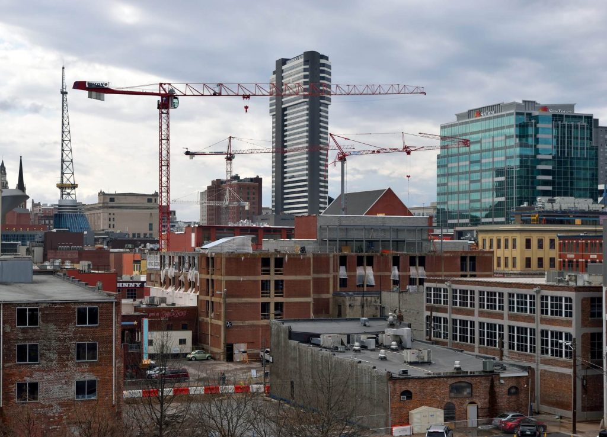
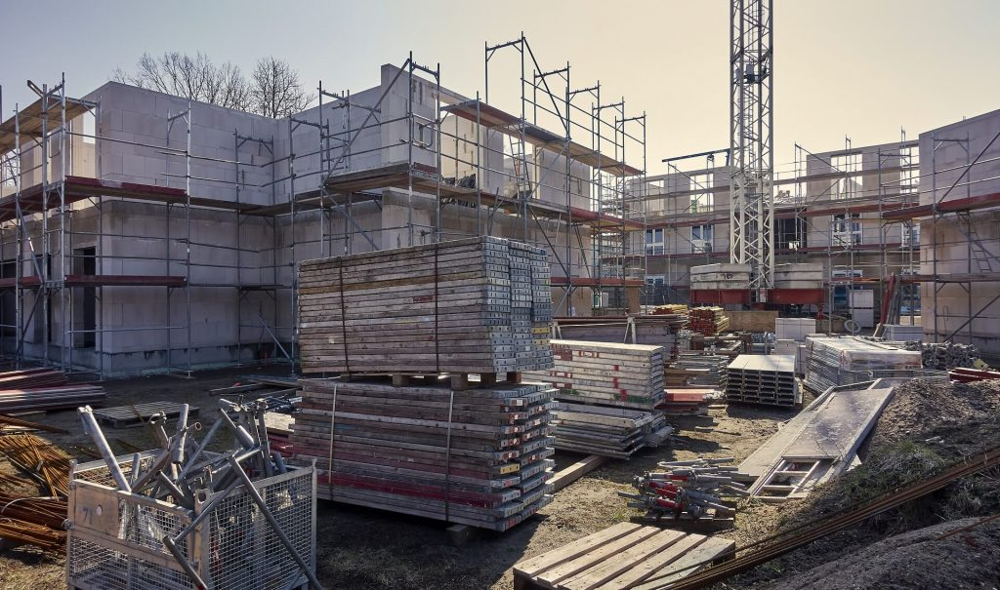

Construction services: Here is what you should know
The term construction services covers a wide spectrum of tasks and responsibilities in the course of the building process. From design to completion, there is a plethora of services and parameters that should be taken care of. Even after the completion of a project, monitoring the building’s life-cycle is fundamental for its quality and well-being of its residents. For that reason, it is always crucial to keep an accurate and detailed project management plan in place. In that way, you can be sure that everything processes according to schedule and that there are no harmful operation mistakes or delays. Like that, everything will be completed on budget and time. In an effort to provide our readers with more clarity over the different types of building and construction services, we present the most important of them below. As you can see, we have divided our construction services list into four distinct parts: 1. Pre-construction services Everything starts with pre-construction services. As soon as the journey for a new building project begins, there is a number of tasks and questions that the team should look into. Simply put, this is the time where an idea is gradually turning into an actual project and that practical aspects of the vision in discussion are analysed. 
It is also a first effort for the team members to acquire a better understanding of the potential project costs and expectations. The earlier in the project the tougher it is to predict the total cost of a new building structure or a renovation project. That’s why, asking the right questions is essential. For instance, some of the main points that project teams are concerned of during the initial project phase could be the following: What’s the first step that I need to focus on? What type of building permits will be necessary? Is it better to invest in a new construction, renovation or demolition project? What could be the total cost of the project? How long will the project take? What type of challenges might emerge during the building process? These are only a few of the questions that a project team has to take into serious consideration before the building process begins. With that in mind, developing a detailed plan which can guide you through the whole process is an excellent idea. Find here: Construction HVAC – Understanding the basics This is the list with some of the most crucial services that you should look into during the pre-construction phase: Cost estimation Project scheduling Design decision-making Handling of construction materials Building permits Traffic studies LEED Certification process Land purchase 2. Construction project management Once the project starts progressing, there are many different elements that should be taken into consideration. From project initiation to closure, there should be solid collaboration between the various agents and good team coordination. 
Here are the most significant construction services during the execution phase: Focus on your site’s safety. Make sure that all safety standards are respected. Quality control Hold regular meetings with project agents (eg. owners, subcontractors, consultants). Cost accounting for construction projects. Monitor and coordinate all work on site. Find the right people for work. Take care of project documentation (eg. Submittals, RFI’s). Punch list Construction site visits Stay on top of payments. Post construction phase As soon as the construction phase of the project is done, there are a couple of things that still need to be done. Building projects can many times end up being messy. That’s why in the post construction phase the project team should take care of any potential disputes or warranty problems that might emerge. In short, these are the key areas of concern during the post construction phase: Resolving construction disputes. Taking care of warranty issues. Addressing any type of concerns on site. 3. Design-build The design-build method has attracted a lot of attention lately. Having the same team providing both the design and construction services can boost your project’s efficiency and minimize risk. Moreover, keeping the design and construction phases connected can help you obtaining a better understanding of the potential challenges that might come along your way during the building process. Like that, you can be confident that you will make the right choices when it comes to material and equipment selection. Furthermore, the design-build phase is expected to unlock many opportunities for the construction industry when it comes to sustainable building and innovation. Check out also: UK could save £15 billion every year by lifting construction productivity In a nutshell, we could summarise the most decisive construction and building services to the following: Dealing with project conflicts. Taking care of project expenses which by the way can be significantly lower in design-build projects. Keeping a close eye on project quality in terms of design, feasibility and complexity. Boosting project efficiency and team coordination. Coordinating progress meetings and optimising communication between the numerous project sides. 4. Building services In the first three construction service categories we mainly focused on services that are inextricably connected with design and the project management process. Now, we will turn our attention to more practical tasks and construction services which concern the life-cycle of a building.